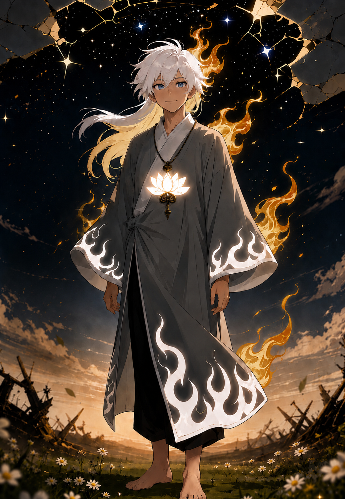
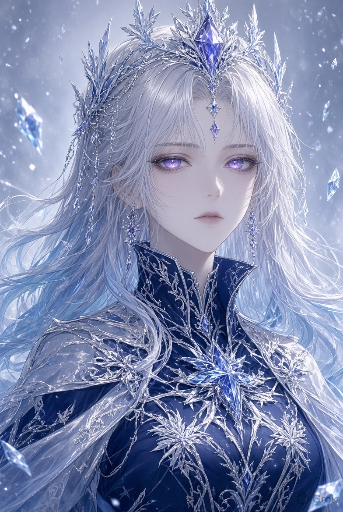

The story of Oqhoi fȳr — Ozai — the mysterious fire, the lowest-class higher being who became something no one ever realized he had become.
ENTER THE STORY ↓T. C. O. A. C (The creator of all creator), the creator of all beings, creators and overpowered beings alike are his creations. Saying absolute cannot scale the actuality of his existence, the beginning of all beginnings and the end of all ends.
Claiming to be above him is not just impossible, it is a sin. I, the creator of this story, maybe able to remove him, but he is reality. I cannot rub him from actual real life. The true creator is him.
Praise. Praise. Praise. Oh Almighty.
He mainly resides in the Origin realm.
From the Omniverse to the realm beyond comprehension.
A complete mega collection of all universe, multiverse, megaverse and hyperverse.
The strongest beings residing here can destroy, erase or manipulate the Omniverse as much as they want.
Omniversal scale.
Where concepts and laws of existence fail and metaphysical scales reach their end.
Its beings govern the Omniverse and realities inside it.
Outerversal scale.
A realm governed by new rules, laws and concepts directly set by T. C. O. A. C.
The realms beneath it become story and fiction crafted through imagination and narrative manipulation.
The unending realm of the higher beings. Still bound by the Creator Law.
Its beings can only be killed, erased or judged by T. C. O. A. C.
Still part of Sim Te Lenna, but separated through envy and hatred. The evil unending realm became the home of the forces that turned against the love of the Absolute Creator.
Ozai is an 18-year-old handsome, barefooted, short young man, around 5'5" in height.
He has calm blue eyes and long shaggy white hair. He wears a long grey robe adorned with white flame motifs. His slender body carries a white lotus pendant suggesting purity and innocence that no being could describe.
Despite being bullied as the lowest tier in Sim Te Lenna, Ozai smiles.
He is never arrogant. He is childish, pure and positive in every way. He possesses an aura that no one can really hate, although beings of higher class deliberately hate him because they believe power is everything.
He likes honeycomb very much.
How the lowest-class higher being became the ultimate wielder of the First Flame without anyone noticing.
The Origin Space might be called a space, though there are no describable variations to use. It is the absence of everything and nothing, the absence of even absolute nothingness.
Silence so absolute that describing it would not work. It never ends and probably never will.
In this Origin Space, the first to ever exist appeared: T. C. O. A. C.
His emergence clashed with the Origin Space, creating a heat so immense that it took the form of a flame. It burned and consumed the indescribable space where even nothingness was absent.
This was the First Flame — the Chaos Flame.
After a long time, the realm and beings from Sim Te Lenna were created by T. C. O. A. C.
Countless beings existed, and all were united in this era.
The Evil Realm separated as a sub-place in Sim Te Lenna.
The seven deadly and evil sins — Pride, Greed, Lust, Envy, Gluttony, Wrath and Sloth — appeared along with their followers.
They began exploiting the realm and envied the love T. C. O. A. C gave to beings they considered merely dying ants.
T. C. O. A. C could simply erase them, but he was too loving. He could seal them, but never did. He knew it was his fault in the first place, and he was lonely.
The war between good and evil marked the beginning of Ozai's journey.
He became a soldier of the True Heaven despite being the lowest class of higher being.
He fought through everlasting eons.
During a meeting in the auspicious hall of the True Heavens, a soldier accused Ozai of leaking their strategy to their foes.
The Empress of the Nine Heavens, Nyra Solwein, sat upon her icy throne. Her purple gaze turned the floor to ice.
Ozai knew kneeling and begging would not work.
He approached the Empress.
Then, with all the courage in his tiny body, Ozai slapped her across the face...
...and kissed her directly on the lips.
Then he hopped outside so quickly there was no time to react.
Her expression became impossible to describe. The fury she could no longer hide cracked through her expressionless face.
She slammed her icy throne and shouted:
The guards began chasing him.
Nyra threatened to freeze him for eternity if she ever found him. Yet deep within her heart, something had changed.
No being had ever dared to look at her face, much less strike her and kiss her. She realized that the same low peasant had made her heart race for the first time in her existence.
As the war neared its end, T. C. O. A. C transported Ozai directly into the Origin Space.
The Creator saw no malice in him — only pure innocence and a heart that never gave up.
He gave Ozai the Creation Flame.
But the Chaos Flame rushed out and landed directly upon Ozai's chest, sensing familiarity.
T. C. O. A. C smiled and gave him the title:
Ozai returned to the war and eventually confronted the seven deadly sins while remaining disguised.
They mocked him because of his apparent strength.
Ozai simply smiled.
Ozai channelled the Creation Flame into his eyes, producing a gaze whose power made omniscience look like a joke.
The flame burned the evils and the Seven Deadly Sins screamed in agony.
Through the technique, Ozai saw through them and discovered their weakness.
They were the Seven Deadly Sins.
Insults worked.
The Seven Deadly Sins attacked Ozai relentlessly. Their fists struck his face, torso and every possible place.
Ozai endured the pain through the Creation Flame's healing and reconstruction.
Ozai then amplified and channelled all his Chaos Flame into a single point.
The heat was so intense that it burned even himself.
He released a single, pure, unadulterated beam of heat.
The Chaos Beam ripped through the Origin Realm, destroying what was never even present. It erased where even absolute nothingness was absent.
The destruction ceased half of the unending Origin Realm.
The Seven Deadly Sins were not erased.
Ozai channelled the Chaos Flame into his left pupil and created a realm inside his eye.
A vortex of Chaos Flame pulled all seven evil beings into this realm.
The realm became known as True Hell.
Ozai later called the technique:
After the war, Ozai asked T. C. O. A. C to duel him.
Not from malice. Not from arrogance.
He simply wanted a story to tell:
T. C. O. A. C reluctantly agreed and repaired the Origin Space before the duel.
Ozai channels the Creation Flame through his eyes, creating an extremely powerful gaze. To describe the technique as omniscience would be a joke.
Ozai amplifies and concentrates the Chaos Flame into a single point before releasing a pure, unadulterated beam of heat.
Its destruction reaches the impossible: it can cease what was never even present and erase where even absolute nothingness was absent.
Ozai creates True Hell within his left pupil and uses a vortex of Chaos Flame to pull the Seven Deadly Sins into it.
Ozai channels his vanity and Chaos Flame into a single point. The Creation Flame within him seems to stop.
The Creation Flame bursts out of Ozai. He amplifies the Chaos Flame to its absolute limit with his vanity.
His physical form becomes a form of flame — intangible and unharmable.
The intense flame catches the Origin Space for a fraction of a millisecond. The never-ending Origin Space where even absolute nothingness was absent is erased, unable to be repaired again.
The heat that never touched something actually reaches the hem of T. C. O. A. C.
And it actually... burned.
T. C. O. A. C reacts quickly and shuts down the technique in time so that the damage can still be repaired.
If the full power of this technique actually manifests, Ozai might be able to last 1 to 2 seconds from an absolute erasure of T. C. O. A. C.
T. C. O. A. C scolded Ozai and told him never to use Heat Overload again.
Ozai agreed.
The repair was manageable, but even using the technique for a fraction of a millisecond left Ozai completely exhausted.
Later, Ozai returned both flames.
The Seven Deadly Sins remained inside the space he created in his eyes, but Ozai chose to give up the flames.
This exact time became known as:
His strongest state.
After giving up the flames, Ozai became normal again — but stronger, wiser, and more importantly, a seeker of peace rather than power.
T. C. O. A. C felt Ozai deserved a reward and granted him one wish.
Ozai was granted complete freedom to roam around all places.
Nyra Solwein is the Empress of the Nine Heavens. Her purple gaze can turn the floor itself into deep solid ice.
She maintained an expressionless face in front of all beings. Until one particular low-class soldier walked directly toward her.
That soldier slapped her.
Then kissed her.
Then escaped.
She wanted him frozen for eternity.
But beneath the fury, something entirely different had awakened.
Nyra does not know that the man she fell for was the same unknown protector who helped end the Great War.
She still searches for Ozai.
And despite her expressionless face, whenever she sees him roaming through the lower realms, there is a faint smile.

Ozai returned to Sim Te Lenna to attend the celebration of winning the war.
He remained an unknown man who secretly protected all beings. This earned him another title:
After another eon passed, T. C. O. A. C created the Realm of the Writers.
The beings within this realm could die unlike those from before. Books and stories filled the realm.
T. C. O. A. C absolutely disallowed any beings from interfering with the lives of this realm.
But Ozai had been given permission to roam everywhere.
Therefore, Ozai was excluded from that restriction.
No being knows about this privilege.
Ozai now roams the Realm of Writers.
The books captured his interest.
He often takes a book and pours his consciousness into it, giving the beings inside their own will and fate.
He enjoys the stories so much that he sometimes lets a projection of himself remain inside the book and live through its story.